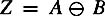
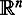
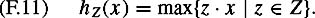
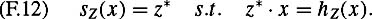
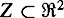
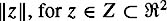
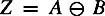
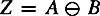
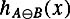

|
| |||||||||||||
|
|
||
In many applications, it is useful to know the minimum distance between two objects in addition to knowing whether or not they are in contact. We have seen in chapter 2 that knowledge of distance is essential for implementing the Bug family of algorithms. Moreover, minimum distance calculations are essential for collision detection, which is merely a special case of minimum distance calculations: if the minimum distance between two objects is zero, then they are in contact. In this section, we present an algorithm originally described by Gilbert, Johnson and Keerthi for computing the distance between convex polytopes, commonly referred to as the GJK distance computation algorithm [163].
We define the distance between polytopes A and B as
We reformulate (F.8) in terms of the Minkowski difference of two polytopes, i.e.,
Using (F.9) we can rewrite (F.8) as
and we have reduced the problem of computing the distance between two polytopes to the problem of computing the minimum distance from one polytope to the origin.
In section F.3 we have seen an implementation of the Minkowski difference to construct the configuration space obstacle region. From this, it is easy to see that the Minkowski difference of two convex polytopes is itself a convex polytope. Since Z = A ⊖ B is a convex set, and since the norm, ||z||, is a convex function, z* = arg minz∊Z ||z|| is unique. Thus, there is a unique solution to (F.10). Note that the values of a and b that achieve this minimum are not necessarily unique.
Although finding the distance from Z to the origin may seem simpler than computing the distance between A and B, it should be noted that this is actually the case only if the necessary computations to determine minz∊Z ||z|| are simpler than the computations required to compute d(A, B) directly. This turns out to be the case for the GJK algorithm. Before we examine how this algorithm can be applied to the Minkowski difference of A and B,we first describe the algorithm for the case of computing the distance from Z to the origin, for Z any convex polytope.
Suppose Z is a polytope in  (i.e., n = 2 for polygons, and n = 3 for polyhedra). The GJK algorithm iteratively constructs a sequence of polytopes, each of which is the convex hull of some subset of the vertices of Z, such that at each iteration the distance from the origin to the new polytope decreases. Before describing the algorithm more formally, we define some useful terminology and notation.
The convex hull of a set of points in is the smallest convex set in  that contains those points. Efficient algorithms exist for computing the convex hull of general point sets, but for our purposes, we will not require such algorithms, since the GJK algorithm only deals with point sets of size three for polygons and size four for polyhedra. The convex hull of a set of three (noncollinear) points is the triangle defined by those points, and the convex hull of a set of four (noncoplanar) points is the tetrahedron defined by those points.
The GJK algorithm relies heavily on the notion of projection. In particular, for a convex set Z and a point x, the GJK algorithm computes the point z ∊ Z with maximal projection onto x. The value of this projection operation is defined by
| (F.11) | 
|
and the point z* that achieves this maximum is defined by
| (F.12) | 
|
The GJK algorithm for polygons is given as Algorithm 23 below. In the first step, the working vertex set V0 is initialized to contain three arbitrarily selected vertices of the polygon, Z. At iteration k, the point xk is determined as the point in the convex hull of the vertices in Vk that is nearest to the origin. Once xk has been determined, in step 5 a new vertex zk is chosen as the vertex of the original polygon, Z, whose projection onto −xk is maximal. The point zk then replaces a vertex in the current working vertex set to obtain a new working vertex set, Vk+1. The algorithm terminates (step 4) when xk is itself the closest point in Z to the origin.
Input: A polytope, . Output: Minimal  1: V0 ← {y1, y2, y3} with yi vertices of Z 2: k ← 0 3: Compute xk, the point in the convex hull of Vk that is nearest the origin, i.e., xk = arg minx∊hull(Vk) ||x||. 4: Compute hZ (-xk), and terminate if ||xk|| = hZ (-xk). 5: zk ← sZ(-xk), i.e., the projection of zk onto xk is nearer the origin than the projection onto xk of any other point in Z. 6: xk is contained in an edge of the convex hull of Vk. Let Vk+1 contain the two vertices that bound this edge and the point zk. 7: k ← k + 1 8: Go to 3.
It is a fairly simple matter to extend the GJK algorithm (Algorithm 23) to the case in which . Note that in the GJK algorithm, we never need an explicit representation of Z. We only need to compute two functions of Z: hZ(x) and sZ(x). Each of these can be computed without explicitly constructing Z. Let . We can compute  as follows,
Now, suppose that a* achieves the value hA(x) and b* achieves the value hB(−x). Then z* = a* − b*, and therefore we have
Thus, we see that the GJK algorithm is easily extended to the case of the Minkowski difference of convex polygons. In steps 4 and 5, merely replace hz and sZ with the expressions (F.13) and (F.14). To extend the algorithm to convex polyhedra, merely replace step 1 of the algorithm by
V0 ← {y1, y2, y3, y4} with yi vertices of Z
and step 6 of the algorithm by
xk is contained in a face of the convex hull of Vk. Let Vk+1 contain the three vertices that bound this face and the point zk.
|
|
||
|